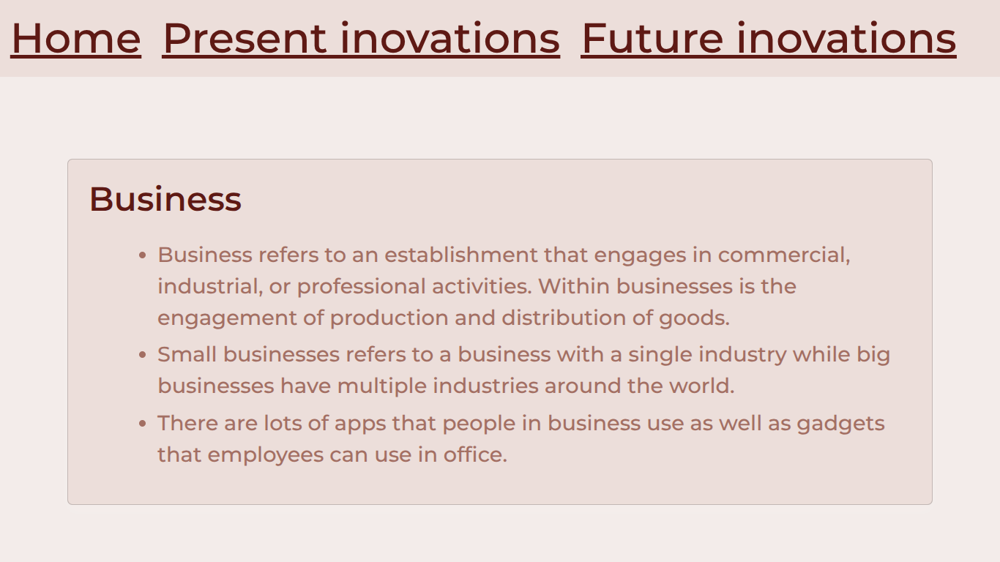
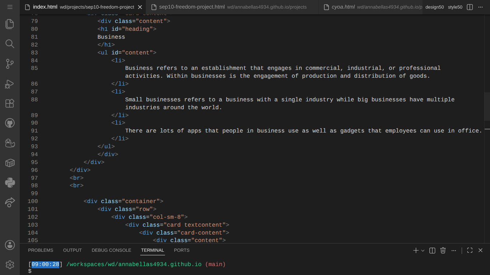

SEP10 Freedom Project
Business
As an SEP 10 student, I was tasked with creating this project throughout the year. Everything we learned though this course led up to this project's creation. The year started out with the research of what I would want for the content. After learning the basics to HTML and CSS, as well as bootstrap, I moved on to learning a tool of my own, which was Bulma. After spending a month learning how to use Bulma, I started to work on the actual project. The website is linked below as well as the blogs which I created while making this project.
Link to the projectLink to the behind the scenes of the project
Here is a preview of the project and the work done in the IDE


Context
This project contained a lot of content in both information and text. Not only did I have to research the technology that goes into business but I also had to research how to use Bulma to make the website to host the information.
Challenges
My biggest struggle was managing my time. As a high school student, I am a part of many different activities, one being theater. The time I was coding the website was when the theater club was going to perform. I had many roles in this performance and because the show day was approaching, rehearsals always ended late, leaving little time to work on the website and other homework. To combat this, I settled for a less appealing website while focusing on putting in the content.
Reflection
The reason for my lack of time management was due to not fulfilling my plan properly. I made a plan to work on my webpage, assigning different work to different days, but I underestimated the amount of work needed to finish each task. The next time I make a project, I'll properly adjust how much time it takes for each chunk of content based on its complexity.
Next Step
I'll be moving onto my next year in the Software Engineering Program where I'll learn ccode like javascript and create projects with that. I'll also continue to learn Bulma so when the time comes I can spice up my website with the css from Bulma.